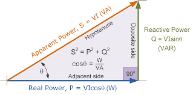

This project is actually one part of a future project that I am in the process of developing. This project entails assembling a high voltage driver capable of turning just a measly 12v into high voltage suitable for driving various high voltage experiments such as tesla coils etc.
One of the most common types of circuits used for generating high voltage is the Zero Voltage Switching Driver circuit. The circuit functions as a form of an astable multivibrator also know as a Royer oscillator. One of the main differences is of course that it uses an LC tank circuit to produce sine waves instead of the typical square waves you normally see with a multivibrator.
the ZVS driver gets its name since the mosfets turn on when the voltage accross them is near zero. This helps eliminate switching losses and emi. One of the most common ways to utilize a ZVS driver is to drive a flyback converter to get thousands of volts.
It's worth mentioning that due to the high voltage nature of this circuit it should be treated as extrememly dangerous. In fact this circuit is more than capable of instantly killing if handled improperly. Please do not try this at home.
Now that the disclaimer is out there, you can see below a simulation of the ZVS driver in action. Some things to note include the reasonance between the capacitor and the inductor, as well as the voltage and the current being 90 degrees out of phase of each other.
It is worth noting that technically the ZVS driver steps up both the voltage and current of the circuit. At first glance you might think that this would break the laws of thermodynamics and you would be correctif this was real power. However, since both voltage and current are 90 degrees out of phase almost all of this power is reactive.

Here you can see a picture of the ZVS circuit that I put together. The ZVS circuit itself is from a kit for building a tesla coil, this kit came along with the included pcb as well as all of the required components.
it's worth mentioning that the setup that you see below is actually not my original setup. The first setup that I had I used an old atx power supply that I bought of ebay. These power supplies are capable of suppling 30 to 45A of current continuous. However when I hooked this power supply up to the ZVS driver I got some small arcs at the flyback, but nothing like what I would expect. Shortly after playing around the arcs I heard a loud pop in my power supply and it no longer turns on. I opened it up to look at the fuse, and the fuse is still in tact. I could troubleshoot further but fo the time being, I will be using this bench switch mode power supply that I got off of amazon. This one has current limiting ability, so I should be able to control the driver more effectively.
 Below you can see a video of an arc being created at the output of flyback transformers primary. Although it may be a crude measurement based on the size of the arc if we assume it to be around 1.5cm then the voltage would be approximately 45000 volts. Since the turns on the primary is around 7. We can estimate the voltage on the secondary to be around 6500 volts. Of course in reality it would be a bit lower due primarily to core loses.
Anyhow I thought that this was a cool experiemnt. It's always fun to play with high voltage arcs. I plan on using this driver to drive a tesla coil. So stay tuned if you'd be interested in that.
Below you can see a video of an arc being created at the output of flyback transformers primary. Although it may be a crude measurement based on the size of the arc if we assume it to be around 1.5cm then the voltage would be approximately 45000 volts. Since the turns on the primary is around 7. We can estimate the voltage on the secondary to be around 6500 volts. Of course in reality it would be a bit lower due primarily to core loses.
Anyhow I thought that this was a cool experiemnt. It's always fun to play with high voltage arcs. I plan on using this driver to drive a tesla coil. So stay tuned if you'd be interested in that.